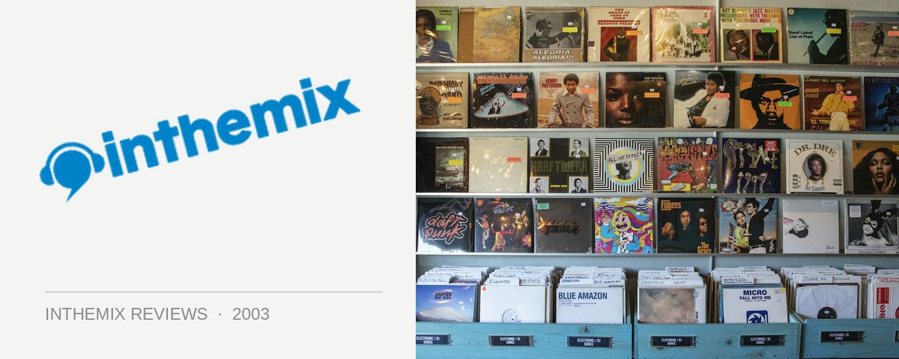

Various Artists - Gatecrasher Residents Transmission
(Gatecrasher/Universal)
While the Gatecrasher compilations could be accused of growing just a little tired of late, Gatecrasher Residents offers a welcome new direction for the series. Instead of the typical (and somewhat soulless) collection of 36 huge new club tunes sequenced and mixed and by computer, Gatecrasher Residents offers instead a different take on the formula: a triple-CD collection mixed by three of Gatecrasher’s most successful and consistent resident DJ’s, Scott Bond, Matt Hardwick, and Eddie Hallowell.
First up on the decks is Gatecrasher resident and co-promoter Scott Bond, his mix featuring the upfront trance with progressive undertones that has become heavily associated with the Gatecrasher sound over the last two years. While it’s a little slow to start off, with the odd inclusion of Head Honcho’s Walls of Jericho from Sasha and Digweed’s last Northern Exposure collection, before long it rolls into great trance territory. Standout tracks include Push vs. Globe’s Tranceformation as well as Sahara by Euphonic, epic trance-scapes featuring floaty strings and nice percussive undertones which gives their sound just a little more depth. While there are perhaps a few too many peak-time tracks to maintain the flow, Bond delivers a solid mix overall, considerably more so than the last couple of Gatecrasher CD’s he has compiled.
As a newcomer and a relative unknown, Eddie Hallowell ventures into slightly harder territory, reflecting the growing influence of hard trance in clubs around the world. In spite of this, Hallowell’s mix is still quite uplifting and never strays too far from the euphoric Gatecrasher sound. His set is actually full of new mixes of classic anthems, and it even concludes with the DJ Jamx & De Leon mix of Steve Morley’s Reincarnations, which was included on the definitive Gatecrasher Wet a number of years ago.
Surprisingly, it is Matt Hardwick who delivers the standout mix among the three. Kicking it off with the subdued sounds of Andain’s Summer Calling and the always reliable Way Out West, Hardwick builds his mix nicely, taking the listener on a journey like all good trance mixes should. Gradually he ups the tempo, rising the euphoria scale with tracks like Nitromethane’s Time To Die and Sun Decade’s I’m Alone. It is only on the second half of the CD that Hardwick truly lets his mix peak, delivering insanely uplifting and euphoric tracks like Armin Van Buuren’s mix of Oceanlab’s Sky Falls Down and the Thrillseeker remix of Chicane’s Autumn Tactics, that would blow the roof off any club.
Several years after the trance bubble burst and the backlash started, trance is still alive and kicking, in spite of anything that the UK dance media might tell you. While it might not dominate the clubs like it did back in 1999, after a few listens to the CD it genuinely surprised me how fresh trance could sound in 2002. Trance lives – dismiss it at your peril.